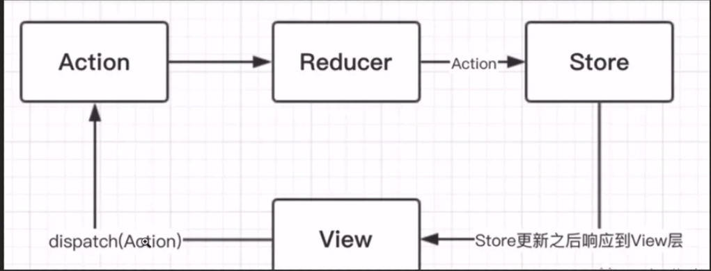

ReactHook
ReactHook快速入门
什么是 React Hook ?
16.8新增特性 使用 state 在函数组件中 hook 钩子 使我们在非 class 的情况下，可以使用更多的 react 特性完全可选 100％向后兼容现在可用 没有计划从 react 中移除 calss 对 react 概念理解没有影响。 props state context
为什么要用 Hook ? 代码更加简洁 上手更加简单
react 上手不容易，主要是？
1．生命周期难以理解，很难熟练应用，
- Redux 状态管理，概念 非常多，难以理解，中文文档
- 高阶组件理解起来不容易，必须掌握，似懂非懂
- 优秀的解决方案，都在 react 社区
Hook 学习成本降低
1．生命周期可以不用学。
2．高阶组件不用学
3.redux也不再是必需品，mobx上手非常容易
开发体验非常好
可以让函数组件维护内部的状态
单向数据流
和vue双向数据绑定不同，自上而下单向数据流方式（react） state/props改变都会引起组件重新渲染（父组件变化->下边的所有子组件重新渲染）
class render
function 整个函数重新执行
函数组件
function Component(){ |
hook其实就是函数式组件 有状态的函数式组件，可以进行state状态管理（16.8之后）
Hook 核心概念与应用 useState
每次渲染，函数都会重新执行，函数执行完毕，所有的内存都会释放掉
相当于在函数内部创建一个当前函数组件的状态，提供了修改状态的方法。通过闭包的特性来实现。
useState(10)=>[count，setCount}],10是设置count初始状态/初始值是10，可以是任意类型（对象，函数等都可）， 第一项对应的是初始状态，第二个参数是修改状态的方法。
useState允许在一个函数中使用多次
let [count,setCount]=useState(0); |
//首次渲染才会执行
//首次执行 count初始值是 {a:1}
//再次执行，获取到的就不是初始值，而是闭包中的缓存值
let [count,setCount]=useState({a:1}); |
useEffect(fn,[]) 组件渲染到屏幕之后才会执行，返回一个清楚副作用的函数或者不返回。类似于componentDidMound,componentDidUpdate相同的用途 .
总会执行一些副作用操作，函数式组件，纯函数，props，固定的输入总会得到固定的输出。
什么是副作用？
比如只想dom->dom渲染完了，还会执行一段逻辑（副作用）
没有发生在数据向视图转换过程中的逻辑。
hook之前副作用都是不被允许的
1.dom渲染完成，副作用执行，useEffect
2.副作用执行过程中，修改了count，state状态被修改，重点
3.state改变->引发重新渲染
4.无限循环
比如：
useEffect(()=>{ |
如何解决？
定义第二个参数，告诉react不依赖于props，state
如果第二个参数改为[count]，那么每次都会更改触发useEffect，重复渲染问题。改为[num]后也不会多次触发。
加上userEffect的第二个参数[]数组进行浅比较，执行完一次以后 里面的值没有变化便不再去执行。
一般是不需要同步的，如果需要同步，使用useLayouEffect
如何清除副作用？
useEffect返回一个清楚副作用的函数或者不返回，
componentWillUnmount会在组件卸载前下一次useEffect前先清除掉useEffect的执行的回调函数。
useContext
16更新了context api
Root App要传递一个数据必须一级一级父传子那样传下去。现在通过context api可以直接传过去，不需要层层传递，爷孙组件传值。
两个互不相干的组件怎么传递？
提供一个顶层的组件
context和useContext组件之间的状态共享问题 redux
import React,{createContext,useState,Children} from 'react' |
useReducer
和redux差不多
useState内部就是靠useREducer实现的
useState的替代方案 (state,action)=>newState
可以接收3个参数 state，配套的dispatch
评估好当前应用场景，复杂可以用useReducer来实现

import React,{useReducer} from 'react' |
//定义第二个参数 createStore() 指定默认值
let initialState={count:11,name:’recuder’};
//定义第三个参数 函数 会把第二个参数当作参数执行
const init=initialState=>{ |
//Store reducer Action 三大核心redux
export default function ReducerComponents(){ |
useRef
16版本 Object.createRef 创建ref的方法
绑定之后返回一个对象 {currt:’’}
例子：让iput框自动获得焦点
访问dom节点，要在useEffect去操作dom
const number1=2; |
//div内:
<label htmlFor='name'>label:{number1}</label> |
useMemo&useCallback
useMemo: 把创建函数和依赖项数组作为参数传入useMemo,和useEffect类似，返回的是一个值
useCallback：接收一个内联回调函数和一个依赖项数组。返回的是一个重新创建的函数
两个都一定要记得传第二个参数才能实现缓存
//闭包 实现缓存 占用内存 不能盲目使用
//依赖项频繁变动要考虑是否使用这俩
const memorized=useCallback(() => { |
//div:
<button onClick={changeNum} >改变num依赖项</button> |
自定义hook
逻辑功能相当的片段=>封装成单独的函数来使用
自定义hook 函数
自定义的hook中可以调用官方提供的hook useState
use开头，表示只能在函数组件中进行使用
use开头
render props 高阶组件 redux
复用状态逻辑的方式，而不是复用state本身
事实上Hook每次调用都有一个独立的state
抽离公共代码
Hook使用规则
1.只能在最顶层使用hook，不要在循环，条件，嵌套函数中调用hook
2.旨在react函数中调用hook